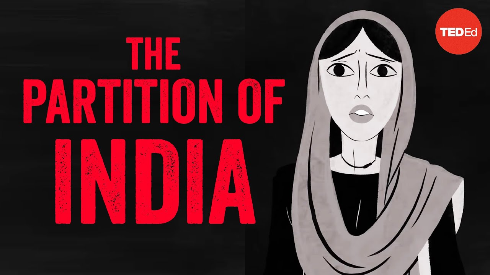

来B站一起耍【Global每日英语简报】
【印度为何被分裂成两个国家？ - Haimanti Roy】
Summary: The video explores the partition of India in 1947, detailing the historical, religious, and political factors that led to the division, the violent aftermath, and its lasting impact on the region.
摘要： 本视频探讨了1947年印度分治的历史，详细分析了导致分裂的历史、宗教和政治因素，暴力后果及其对该地区的持久影响。

⏱️ Estimated Reading Time: 8 min
In August 1947, India gained independence after 200 years of British rule.
1947年8月，印度在经历了200年的英国统治后获得独立。
What followed was one of the largest and bloodiest forced migrations in history.
随后发生了历史上规模最大、最血腥的强制移民之一。
An estimated one million people lost their lives.
估计有一百万人丧生。
Before British colonization, the Indian subcontinent was a patchwork of regional kingdoms known as princely states populated by Hindus, Muslims, Sikhs, Jains, Buddhists, Christians, Parsis, and Jews.
在英国殖民之前，印度次大陆是由地区性王国组成的拼图，这些王国被称为土邦，居住着印度教徒、穆斯林、锡克教徒、耆那教徒、佛教徒、基督徒、帕西人和犹太人。
Each princely state had its own traditions, caste backgrounds, and leadership.
每个土邦都有自己的传统、种姓背景和领导层。
Starting in the 1500s, a series of European powers colonized India with coastal trading settlements.
从16世纪开始，一系列欧洲列强通过沿海贸易据点殖民印度。
By the mid-18th century, the English East India Company emerged as the primary colonial power in India.
到18世纪中叶，英国东印度公司成为印度主要的殖民势力。
The British ruled some provinces directly, and ruled the princely states indirectly.
英国直接统治一些省份，并间接统治土邦。
Under indirect rule, the princely states remained sovereign but made political and financial concessions to the British.
在间接统治下，土邦保持主权，但在政治和财政上向英国让步。
In the 19th century, the British began to categorize Indians by religious identity— a gross simplification of the communities in India.
19世纪，英国开始按宗教身份对印度人进行分类——这是对印度社区的严重简化。
They counted Hindus as “majorities” and all other religious communities as distinct “minorities,” with Muslims being the largest minority.
他们将印度教徒视为“多数”，其他所有宗教社区为“少数”，其中穆斯林是最大的少数群体。
Sikhs were considered part of the Hindu community by everyone but themselves.
锡克教徒被除自己以外的所有人视为印度教社区的一部分。
In elections, people could only vote for candidates of their own religious identification.
在选举中，人们只能投票给与自己宗教身份相同的候选人。
These practices exaggerated differences, sowing distrust between communities that had previously co-existed.
这些做法夸大了差异，在曾经共存的社区之间播下了不信任的种子。
The 20th century began with decades of anti-colonial movements, where Indians fought for independence from Britain.
20世纪始于几十年的反殖民运动，印度人为摆脱英国统治而斗争。
In the aftermath of World War II, under enormous financial strain from the war, Britain finally caved.
第二次世界大战后，英国因战争承受巨大的财政压力，最终让步。
Indian political leaders had differing views on what an independent India should look like.
印度政治领导人对独立后的印度应是什么样子存在分歧。
Mohandas Gandhi and Jawaharlal Nehru represented the Hindu majority and wanted one united India.
莫罕达斯·甘地和贾瓦哈拉尔·尼赫鲁代表印度教多数派，希望建立一个统一的印度。
Muhammad Ali Jinnah, who led the Muslim minority, thought the rifts created by colonization were too deep to repair.
领导穆斯林少数派的穆罕默德·阿里·真纳认为，殖民造成的裂痕太深，无法修复。
Jinnah argued for a two nation division where Muslims would have a homeland called Pakistan.
真纳主张两国分治，穆斯林将拥有一个名为巴基斯坦的祖国。
Following riots in 1946 and 1947, the British expedited their retreat, planning Indian independence behind closed doors.
1946年和1947年的骚乱后，英国加速撤退，秘密策划印度独立。
In June 1947, the British viceroy announced that India would gain independence by August, and be partitioned into Hindu India and Muslim Pakistan— but gave little explanation of how exactly this would happen.
1947年6月，英国总督宣布印度将在8月独立，并被划分为印度教印度和穆斯林巴基斯坦——但几乎没有解释具体如何实现。
Using outdated maps, inaccurate census numbers and minimal knowledge of the land, in a mere five weeks, the Boundary Committee drew a border dividing three provinces under direct British rule: Bengal, Punjab, and Assam.
边界委员会仅用五周时间，使用过时的地图、不准确的人口普查数据和对土地的最少了解，划定了分割英国直接统治的三个省份——孟加拉、旁遮普和阿萨姆的边界。
The border took into account where Hindus and Muslims were majorities, but also factors like location and population percentages.
边界考虑了印度教徒和穆斯林占多数的地区，但也考虑了地理位置和人口比例等因素。
So if a Hindu majority area bordered another Hindu majority area, it would be included in India— but if a Hindu majority area bordered Muslim majority areas, it might become part of Pakistan.
因此，如果一个印度教占多数的地区与另一个印度教占多数的地区接壤，它将被划入印度——但如果一个印度教占多数的地区与穆斯林占多数的地区接壤，它可能成为巴基斯坦的一部分。
Princely states on the border had to choose which of the new nations to join, losing their sovereignty in the process.
边境上的土邦必须选择加入哪个新国家，在此过程中失去主权。
While the Boundary Committee worked on the new map, Hindus and Muslims began moving to areas where they thought they’d be a part of the religious majority— but they couldn’t be sure.
在边界委员会绘制新地图时，印度教徒和穆斯林开始迁移到他们认为会成为宗教多数派的地区——但他们无法确定。
Families divided themselves.
家庭分裂了。
Fearing sexual violence, parents sent young daughters and wives to regions they perceived to be safe.
由于害怕性暴力，父母将年幼的女儿和妻子送到他们认为安全的地区。
The new map wasn’t revealed until August 17th, 1947— two days after independence.
新地图直到1947年8月17日——独立两天后才公布。
The provinces of Punjab and Bengal became the geographically separated East and West Pakistan.
旁遮普和孟加拉省成为地理上分隔的东巴基斯坦和西巴基斯坦。
The rest became Hindu-majority India.
其余地区成为印度教占多数的印度。
In a period of two years, millions of Hindus and Sikhs living in Pakistan left for India, while Muslims living in India fled villages where their families had lived for centuries.
在两年时间里，数百万生活在巴基斯坦的印度教徒和锡克教徒前往印度，而生活在印度的穆斯林逃离了他们家族生活了几个世纪的村庄。
The cities of Lahore, Delhi, Calcutta, Dhaka, and Karachi emptied of old residents and filled with refugees.
拉合尔、德里、加尔各答、达卡和卡拉奇的旧居民离开，城市挤满了难民。
In the power vacuum British forces left behind, radicalized militias and local groups massacred migrants.
在英国军队留下的权力真空中，激进民兵和地方组织屠杀移民。
Much of the violence occurred in Punjab, and women bore the brunt of it, suffering rape and mutilation.
大部分暴力发生在旁遮普，妇女首当其冲，遭受强奸和残害。
Around 100,000 women were kidnapped and forced to marry their captors.
约10万名妇女被绑架并被迫与绑架者结婚。
The problems created by Partition went far beyond this immediate deadly aftermath.
分治造成的问题远不止这些直接的致命后果。
Many families who made temporary moves became permanently displaced, and borders continue to be disputed.
许多临时搬迁的家庭永久流离失所，边界争议持续不断。
In 1971, East Pakistan seceded and became the new country of Bangladesh.
1971年，东巴基斯坦脱离并成为新国家孟加拉国。
Meanwhile, the Hindu ruler of Kashmir decided to join India— a decision that was to be finalized by a public referendum of the majority Muslim population.
与此同时，克什米尔的印度教统治者决定加入印度——这一决定本应由占多数的穆斯林人口通过公投最终确定。
That referendum still hasn't happened as of 2020, and India and Pakistan have been warring over Kashmir since 1947.
截至2020年，公投仍未举行，印度和巴基斯坦自1947年以来一直在为克什米尔交战。
More than 70 years later, the legacies of the Partition remain clear in the subcontinent: in its new political formations and in the memories of divided families.
70多年后，分治的遗产在次大陆依然清晰可见：体现在新的政治形态和被分裂家庭的记忆中。